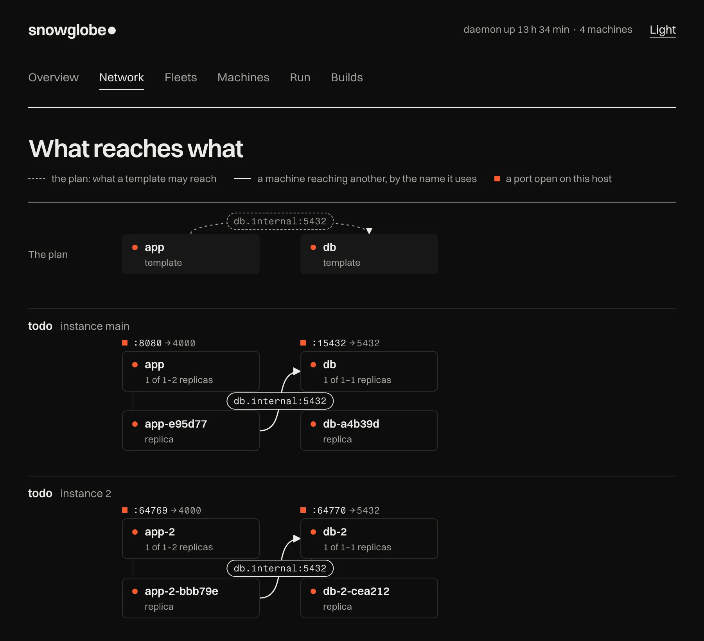

Real programs, sandboxed in your browser.
Each run below is a whole Linux machine, packaged from a Dockerfile and emulated in WebAssembly right in this tab. No server runs it, its only way out is your browser's own requests, and closing it throws the machine away.
Run one here to type into it, or open it in a window of its own. It is a 64-bit ARM CPU in emulation, so it is slower than native; every number and transcript below was measured and recorded when this site was built.
Install snowglobe on Linux (x86-64, arm64) or a Mac with Apple silicon
curl -fsSL https://filipecabaco.github.io/snowglobe/install.sh | sh
It checks the release's checksum and installs into ~/.local/bin, no sudo.
Read the script · other ways
Compare the runs
The snapshot is what a run downloads before the machine resumes. Preloaded files follow in the background: everything the run read while booting, or while its commands were exercised. The rest is fetched only if you touch it.
| Run | Snapshot | Ready at build | Preloaded | On demand | Files |
|---|
Make your own
Every run on this page came out of one command. snowglobe is a single Go binary. It builds with Docker, or with no Docker at all from an image in a registry or a saved archive, and the result is a folder of static files you can host anywhere.
Install
$ curl -fsSL https://filipecabaco.github.io/snowglobe/install.sh | sh
# or, with Go
$ go install github.com/filipecabaco/snowglobe/cmd/snowglobe@latestDescribe
Any arm64 Alpine image works. Its CMD, ENV and WORKDIR are what the
visitor's terminal gets. Labels say when the program is ready, and which commands to exercise
so their files are preloaded. The Python run's Dockerfile, exercise list shortened:
# examples/python/Dockerfile
FROM alpine:3.24.2
RUN apk add --no-cache python3 && \
python3 -m venv /opt/venv && \
/opt/venv/bin/pip install --no-cache-dir rich==15.0.0
COPY startup.py /root/startup.py
ENV LANG=C.UTF-8 PATH=/opt/venv/bin:$PATH \
PYTHONSTARTUP=/root/startup.py
WORKDIR /root
CMD ["python3"]
LABEL snowglobe.title="Python + Rich in the browser" \
snowglobe.ready=">>> " \
snowglobe.exercise='["inspect(str.split)", "1 / 0"]'
Build
It adds a kernel and a 9p boot layer, converts the image, boots it headless until the ready
text appears, snapshots it, then types the exercises and measures what they read. With
--builder native it needs no Docker: it pulls the image from its registry (or reads a
saved archive) and boots it here. An excerpt of the real log from this site's build:
$ snowglobe build examples/python --out dist/python
==> Resolve source image
command: 'python3'
ready: ">>> "
memory: 512 MB
network: none
==> Add boot layer
==> Convert to a 9p filesystem
5984 entries, 157 MB uncompressed, 4842 unique files
==> Assemble page
==> Boot and snapshot
App ready on hvc0 after 46.8s
Saved /out/system/state.bin.zst (14 MB)
Exercising: t = Table("language", "year")… (0 files, 3.8s)
Exercising: Syntax("def fib(n):…", "python") (3 files, 5.2s)
==> Write warm pack
warm.pack: 410 files, 8.5 MB
read while booting 404 files 8.4 MB
first read by: Syntax… 3 files 0.0 MB
never read 4055 files 43.5 MB
dist/python is ready to deploy.
Ship
Preview it locally, then put the folder on any static host. Make it an app people can install and run offline, and let several runs on one host share one blob store. This site is GitHub Pages, built by a workflow running the same commands; every run on it is installable, and each one shares to X as a post that boots it.
# preview at http://localhost:8000 $ snowglobe serve dist/python # installable, and offline once it has run $ snowglobe pwa dist/python # several runs on one host: share one blob store $ snowglobe pool dist
Run
The same site runs without a browser: in a sandboxed container, or natively with no Docker, where
the emulator sandboxes itself (Landlock and seccomp on Linux, Seatbelt on macOS). A session in your
terminal, lines piped in as commands, or a long-lived instance that scripts drive with
exec. It runs from a folder, from a site's URL (try
snowglobe run https://filipecabaco.github.io/snowglobe/python/), or from one tarball on a
CDN, and bundle makes it a single executable.
# a session in your terminal; ctrl-] quits $ snowglobe run dist/python # from where it's hosted: a site's URL, or one tarball $ snowglobe pack dist/python -o python.tar.gz $ snowglobe run https://cdn.example.com/python.tar.gz # one instance, driven command by command $ snowglobe run dist/python --name py --detach $ snowglobe exec py 'sum(range(10))' 45 # no Docker: one file, the emulator and the site $ snowglobe bundle dist/python -o python $ echo 'sum(range(10))' | ./python 45
Sandbox
A run is also a sandbox for agents, job runners and CI, on machines without KVM. Jobs run on the
guest's own shell beside the app: files in, a command, its output, exit status and files back. A job
out of time is killed with everything it started; a run ends at --max-runtime or when its
--stop-file appears, and --log-dir keeps a durable record of every job.
# a shell job, whatever the app is $ snowglobe run dist/python --name box --detach --runtime native $ snowglobe sh box --timeout 30 'python3 -c "print(6*7)"' 42 $ snowglobe cp ./data box:/root/data # an isolated Linux machine for an agent, over MCP $ claude mcp add sandbox -- snowglobe mcp dist/python
In a browser, agents get a page of machines: Supabase, a React app built with Vite, Python, DuckDB and PostgreSQL, all in your tab. An agent changes a web app on Supabase, and you use it live in the page's preview, rebuilt after each change, beside the diffs of what it changed.
Orchestrate
Many machines from one site, still without KVM or root. The daemon restores a site once as a template and forks machines from it in tens of milliseconds, each sharing the memory it doesn't write. Services start machines on a connection and scale to zero when idle, and a fleet file says what should run. Machines reach each other only through links, and have no way out unless their template says so (a fleet, below). Instances outside the daemon share their snapshot's memory too, mapped from one read-only image. Orchestration in the docs covers all of it.
# a template, and machines forked from it $ snowglobe daemon --detach $ snowglobe template add dist/api --name api $ snowglobe up api --name worker $ snowglobe sh worker 'uname -m' aarch64 # behind a port, at zero when idle (the site needs a network) $ snowglobe service add web --template api -p 8080:8000 --min 0 --idle 5m # or all of it from a snowglobe.toml $ snowglobe apply
Every command, flag, label and setting is in the docs, with guides to building, networking, running headlessly, driving it from an agent and orchestrating machines.
A fleet, and what reaches what
The daemon runs a whole stack from one snowglobe.toml, like a compose file: an app and
its database, each a machine of its own. snowglobe ui draws it as it runs: the plan the file
sets out, then every instance of it, its machines, the names they reach each other by and the ports
they open on your host.



examples/todo-fleet in snowglobe ui: an Elixir app and Postgres, in two
instances. Instance 2's app reaches its own database as db.internal:5432, and nothing of
main's.- Nothing joins machines but a link
- A link gives a machine a name to reach another by. It is a Unix socket of that machine's own, answered by the daemon, so no TCP port opens on your host for it. Links change while machines run.
- Each instance keeps to itself
- Start another and it gets an app and a database of its own, beside the first. The fleet's network
mode (
exclusive,inclusiveorall) says what may cross between them. - No way out unless the file says
- A machine's own connections go nowhere by default. A template reaches the internet, or your
private network too, only when its
egresssays so. - From the browser, the API or an agent
- Drag one machine onto another to link them, apply a plan one step at a time, start and remove
instances: in
snowglobe ui, over the daemon's/v1API, or with the same tools over MCP.
The file behind it, the database's part shortened:
# examples/todo-fleet/snowglobe.toml name = "todo" [network] mode = "exclusive" # each instance keeps to itself [templates.app] build = "app" # a Dockerfile directory, built first network = "fetch" # egress stays none: links and ports only [services.app] template = "app" ports = ["8080:4000"] max = 2 # [templates.db] and [services.db]: the same, Postgres on 5432 [links.app-db] from = "app" to = "db" port = 5432 as = "db.internal"
Run it, see it, and give it to an agent:
$ snowglobe daemon --detach $ snowglobe apply -f examples/todo-fleet/snowglobe.toml $ curl localhost:8080/todos # views: overview, network, fleets, # machines, run, builds $ snowglobe ui # fleets, links and the graph, over MCP $ claude mcp add snowglobe -- \ snowglobe mcp --daemon
Links, instances and network modes in the docs.